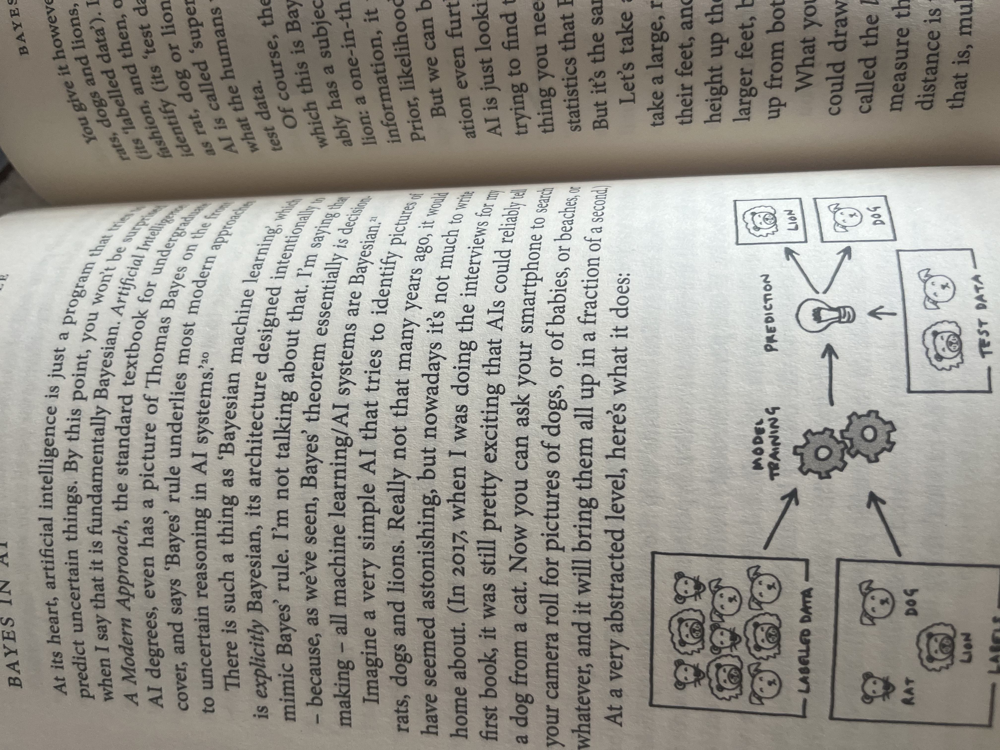

2026.02.28
Economics
Market uncertainty, policy unpredictability, and systemic fragility in contemporary capitalism. How Fed independence, geopolitical fragmentation, and achievement capitalism have made volatility structural rather than cyclical.
2026.02.28
Philosophy
A diagnosis of burnout society, psychopolitics, and the erosion of contemplation. How modern capitalism operates through internalized compulsion rather than external coercion, and what resistance might look like.
2026.02.12
Tech
Hybrid framework combining realized GARCH structures with Bayesian deep learning for probabilistic volatility estimation.
2026.02.12
Music
Technical analysis of avant-garde fusion: how harmonic complexity, structural innovation, and rhythmic mastery converge.
2026.02.21
Economics
BUY recommendation on Iberia's largest REIT. Trading at 13% NAV discount with underappreciated data centre growth story.

2026.02.12
Tech
Reflections on probabilistic thinking, Bayesian reasoning, and intellectual humility in inference.
2026.02.12
Tech
Exploring the intersection between quantitative finance, predictive modelling, and modern ML methods.
2026.02.12
Economics
Policy signalling, emerging market risk, and macroeconomic narratives shaping investor perception.
2026.02.13
Music
Quick snippet from Shibuya.